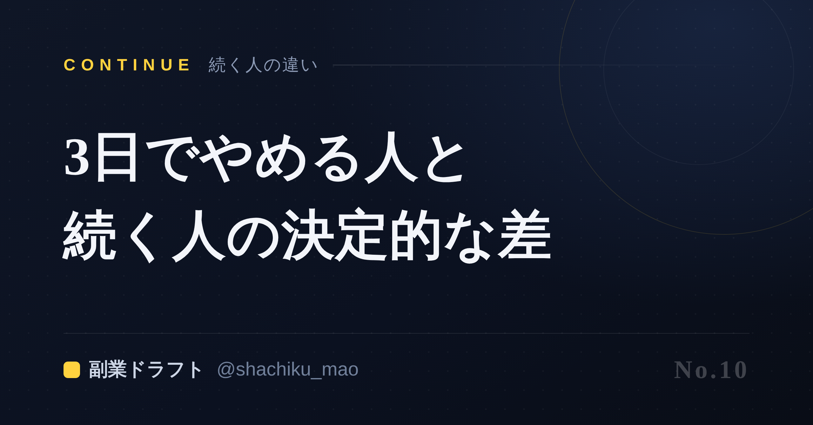
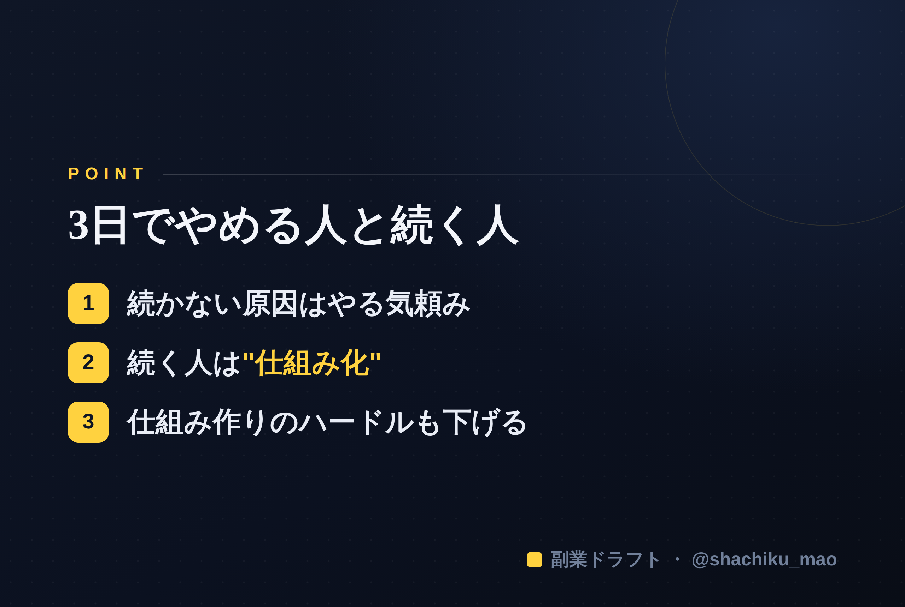

使い方
1. 「タイトルをコピー」→ note のタイトル欄に貼る
2. オレンジのラベルの画像（見出し画像）を note の見出し画像に設定
3. 「本文1をコピー」→ note本文に貼る
4. 青いラベルの位置（本文の途中）に、同じ名前の画像をアップして挿入
5. 「本文2をコピー」→ 続きを貼る
※ 見出しが普通の文字になったら、その行を選んで「大見出し」に設定してください
1. 「タイトルをコピー」→ note のタイトル欄に貼る
2. オレンジのラベルの画像（見出し画像）を note の見出し画像に設定
3. 「本文1をコピー」→ note本文に貼る
4. 青いラベルの位置（本文の途中）に、同じ名前の画像をアップして挿入
5. 「本文2をコピー」→ 続きを貼る
※ 見出しが普通の文字になったら、その行を選んで「大見出し」に設定してください
発信を3日でやめる人と続く人の、決定的な違い
見出し画像に設定：note-10.png

「よし、発信するぞ」と始めて、3日でフェードアウト。 ——身に覚えのある人、多いんじゃないでしょうか。私も何度もやりました。
でも、続く人も確実にいます。その差は、才能でも根性でもありません。決定的な違いは、たった一つです。
続かない人の共通点
まず、続かない人には共通のパターンがあります。
- 毎回ゼロからネタを考えている → 疲れて止まる
- 完璧な投稿を作ろうとする → 時間がかかり、公開できない
- 反応がないと心が折れる → モチベーション頼み
これ、全部「気合い・やる気」に依存しています。そして、やる気は必ず尽きます。人間だから当然です。
続く人の決定的な違い＝「仕組み化」
続く人は、やる気に頼っていません。続く仕組みを持っているだけです。
具体的には——
1. ネタを"作りだめ"している：休日にまとめて用意し、平日は出すだけ 2. 型を持っている：毎回ゼロから考えず、フックや構成の型に沿って埋める 3. 60点で出すと決めている：完璧を待たず、公開して改善する
やる気がある日もない日も、同じように回る。これが「続く」の正体です。
モチベーションは、あてにしない
大事なのは、「やる気があるうちに、やる気がなくても回る仕組みを作る」こと。
始めた直後のテンションが高いうちに、1〜2週間分の投稿を仕込んでおく。すると、やる気が落ちた日でも投稿は途切れません。仕組みが、あなたの代わりに走ってくれます。
「仕組み作り」のハードルも下げる
とはいえ「仕組みを作る」こと自体が面倒で続かない、という人もいます。こここそ、AIに任せどころ。強みを一度言語化すれば、そこからまとめて投稿を用意するのは一気に楽になります。
本文中に挿入：note-10-body.png（この記事のポイント）

自己ヒヤリングで強みを引き出し、1週間分の投稿を数十分でまとめて用意できるのが 「副業ドラフト」 です。やる気に頼らない発信を、仕組みから支えます。無料で試せます。
👉 https://note-threadssf.onrender.com
続くかどうかは、性格じゃなく仕組み。